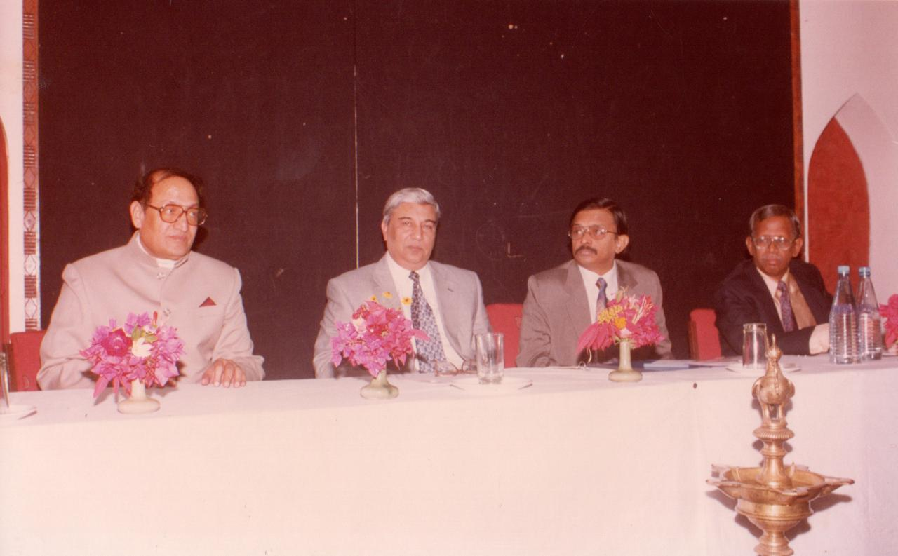
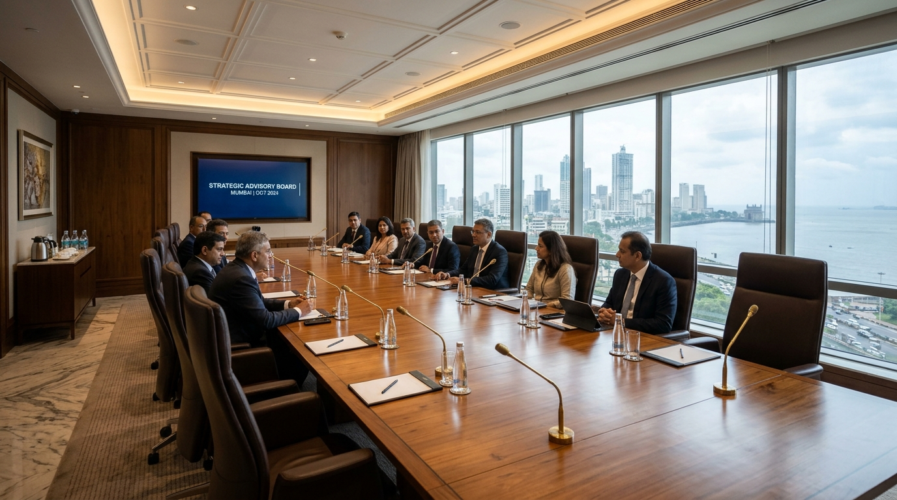

A Decades-Long Trajectory of
Public Command & Fiduciary Stewardship
Tracing six decades of formal appointments, state enterprise leadership, transnational reinsurance councils, and boardroom governance.
Jodhpur University Convocations
Bachelor of Arts & Bachelor of LawsFoundational grounding in contractual jurisprudence, administrative procedures, and economic governance in Rajasthan.
Graduated with BA (1960) and completed LLB (1962) under senior legal scholars, establishing statutory rigor that defined his approach to insurance contracts.
Public Sector Insurance Ascent
Technical Underwritings & Zonal CommandRising through competitive operational ranks in post-nationalization non-life insurance corporations across India.

Spearheaded industrial safety standards, fire and marine tariff reforms, and rural asset protection initiatives across northern and western operating divisions.
United India Assurance Co. Ltd.
Chairman-cum-Managing DirectorAppointed by Government of India to direct total operations of Chennai-headquartered non-life giant.

Safeguarded technical solvency during deregulation, structured comprehensive catastrophic reinsurances, and expanded domestic retail policies.
The New India Assurance Co. Ltd.
Chairman-cum-Managing DirectorApex office commanding India’s largest non-life corporation with 28 global branch jurisdictions.

Presided over global expansion, modern IT claim settlements, and international reinsurance protocols with London, Tokyo, and Nairobi syndicates.
Hindalco Industries Limited
Independent Director (18 Years)Eighteen years of unbroken fiduciary directorship on the Board of Aditya Birla Group’s metals flagship.

Concluded statutory term on 29 August 2024 pursuant to Companies Act Section 149(11). Honored by Board for exemplary vigilance on Audit & Remuneration Committees.